装备
乞力马扎罗有3种登山者，一：打包了一大堆东西，最后大部分都没用上；二：没有准备充分，进了山才发现应该带的必备品没有带；三：带的东西不多不少刚刚好。你愿意做哪一种呢？ 为了帮助你有效地打包行李，小爱总结了一个装备清单，让你了解每件装备在山上的作用，便于你根据你的需要打包。
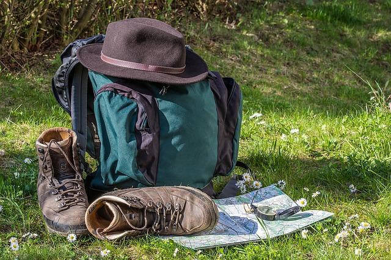
头
- 太阳眼镜:必需品（需要100%防紫外线）。
参考品牌：奥克利（Oakley），雷朋（Ray-Ban） - 遮阳帽：必需品。请选择宽沿的，脖子后面是个容易被忽略的部位，那里尤其要注意防晒。
参考品牌：哥伦比亚（Columbia），狼爪（Jack Wolfskin）防紫外线遮阳帽 - 万能头巾：必需品。万能头巾是万能的，头发太油不想被人看到时，可以用它做头巾；尘土太大或是太冷时，可以作为口罩或面罩；你也可以直接把它套在脖子上做围脖。歪果仁比较青睐的是Buff品牌万能头巾，但是在国内可选择的品牌很多，价格白菜，你根据个人喜好选就好啦。
- 针织帽/抓绒帽：必需品。太阳下山后气温骤降，你需要一顶帽子来保护你头部的温度不流失（很多人都是带着帽子睡觉的）。登顶那天，你是一定需要帽子的。
参考品牌：北面（The North Face） - 头灯：必需品。太阳落山后，你在营地可以都用它照明，登顶那晚头灯的作用更是至关重要（记得带上2节备用电池）。
参考品牌：攀索（Petzl），黑钻（Black Diamond）
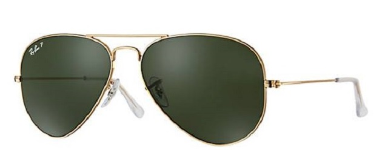
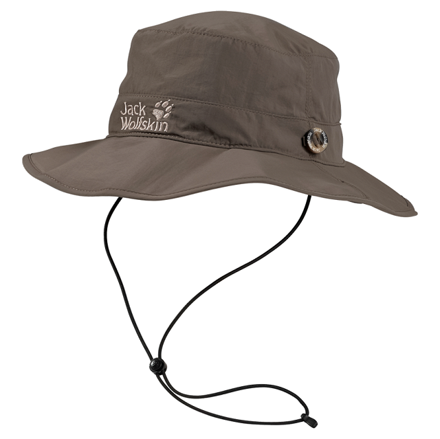
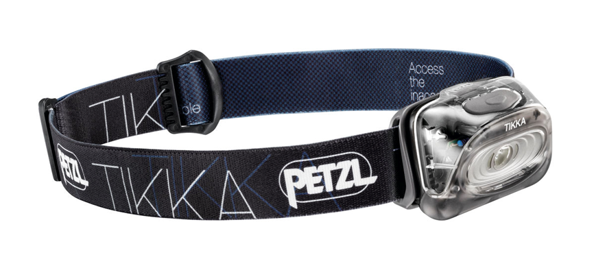
上身
- 速干短袖x 3: 参考品牌：安德玛（Under Armour），迪卡侬（Decathlon）（迪卡侬来自法国，是欧洲最大的体育用品连锁集团，它家的东西价格合理质量过关，当你不知道选什么的时候，去迪卡侬转转！）
- 速干长袖 x3: 参考品牌：安德玛（Under Armour），迪卡侬（Decathlon）
- 抓绒衣：必需品，材质：P200。 参考品牌：北面（The North Face），海丽汉森（Helly Hansen）
- 防水防风硬壳外套：必需品。 参考品牌：哥伦比亚（Columbia），北面（The North Face）
- 保暖外套：必需品。羽绒材质（蓬松度700，关于蓬松度的知识看这里）。你不仅在登顶那天需要它，晚上在营地感觉冷的时候也可以穿哦。
参考品牌：始祖鸟（Arc`teryx），北面（The North Face），Rab
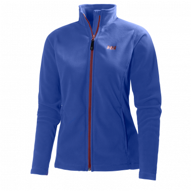
手
- 快干材质/抓绒材质手套：参考品牌：北面（The North Face）
- 棉手套（防水防风）：必需品。但是你只会在登顶那一天才会用。
参考品牌：猛犸象（Mammut），Mountain Equipment, Mountain Hardwear
腿
- 保暖长裤：必需品，羊毛/抓绒材质。晚上睡觉的时候，可以作为睡裤，登顶那一天，它更是会起到至关重要的作用。
参考品牌： Smartwool，海丽汉森(Helly Hansen) - 速干长裤：必需品。厚度：轻便/中等厚度。这条裤子会是你在山里大多数时间穿的一条裤子。6天左右的行程一条就足够了，爱干净的人可以带2条。
参考品牌：Craghoppers（顺便一提，大名鼎鼎的冒险家贝尔，就是穿这个牌子的裤纸的！） - 防水硬壳长裤：必需品。这条裤子会在登顶之夜保护你的双腿，让它们免受寒冷的侵袭。
参考品牌：哥伦比亚（Columbia），北面（The North Face）
脚
- 袜子：薄袜（非纯棉快干吸汗材质）x3, 厚袜（推荐羊毛材质）x3，参考品牌：Smartwool
- 登山靴：必需品。你在山里的一切活动都涉及走路，鞋子是最最重要的，除了合脚以外，鞋子需要有防水表层，需要能为脚踝提供中高度支撑（中、高帮）。装备不是一切！你完全可以穿一双普通运动鞋上山，只不过和穿登山鞋的人比起来，你可能会面临更多麻烦，比如鞋子进水、进沙子等等。小爱只希望你的乞力马扎罗之旅不会被糟糕的装备拖了后腿。
参考品牌：阿索罗（Asolo），所罗门（Salmon）,Timberland
P.S.：请避免穿没有被完全磨合出来的新鞋上山！带着伤脚爬山可不是件好玩儿的事！ - 运动鞋：非必需品。这双鞋是你到达营地后穿的便鞋，每天的长途跋涉，会让你非常渴望换上另外一双鞋的。
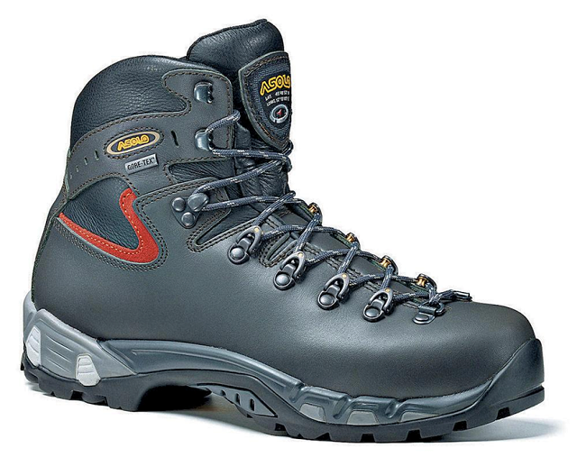
其它
- 防水露营包：必需品，容量80-100L。参考品牌：北面（The North Face），海丽汉森(Helly Hansen)
- 背包&防雨罩：必需品，容量25L左右。参考品牌：Osprey, 北面（The North Face）
- 登山杖：必需品。参考品牌： Leki, 黑钻（Black Diamond）
- 广口水壶x3：必需品。广口广口广口！参考产品：乐基因（Nalgene）运动水壶 1L
- 湿巾&免洗洗手液：必需品。这两样东西是你随时随地都在用的东西，请一定带够哦。
- 高SPF防晒霜：必需品。 参考产品：理肤泉（La Roche Poay）特护清透防晒乳SPF50+
- 个人洗漱用品：必需品。除了必要的洗漱用品以外，你可以带上免洗洗发水（如果你介意6天不洗头，免洗洗发水会是救命的东西）。
- 相机&备用电池：必需品。5-6块备用电池足够啦。
- 零食：非必需品。在山上你会被照顾得很好，不会挨饿。但是，高海拔可能会让你变得没有食欲，这个时候有自己爱吃的零嘴在手边，即便不吃看看也能好受很多呢。
- 耳塞：非必需品。如果你是个必须在安静环境下才能睡着的人，而碰巧你选择的路线又是热门路线的话，耳塞会帮你隔绝营地的嘈杂。
- 尿壶（自选）：非必需品。晚上爬起来上厕所是一件需要你挣扎很久才能决定的事，因为晚上山里真的是冷到不行：你要一层一层地穿好衣服，然后离开温暖的帐篷，去完厕所，再一层一层脱掉衣服。不想经历这些的话，你可以考虑带个尿壶。
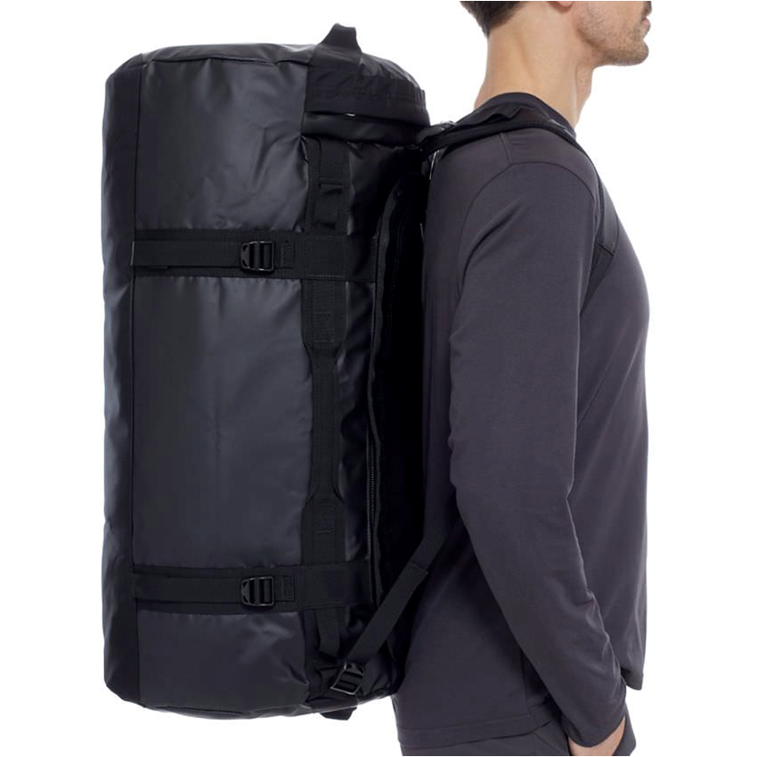
P.S.：把露营包想象成你坐飞机时的托运行李，它会由你的挑夫扛着，你每天只有在到达营地以后才能见到它；你的背包就是坐飞机时你随身带的那件行李，里面有你白天所需的一切。
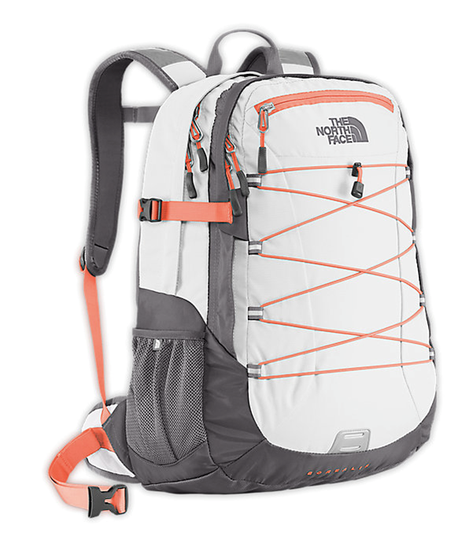
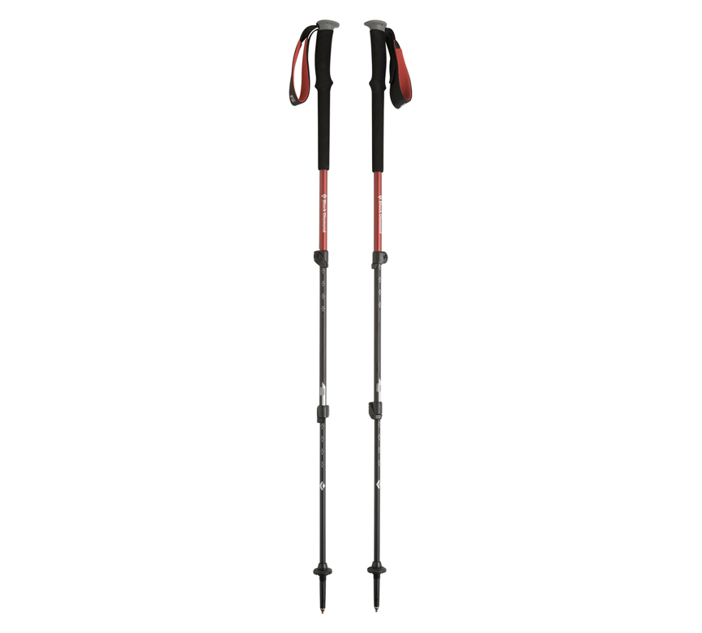
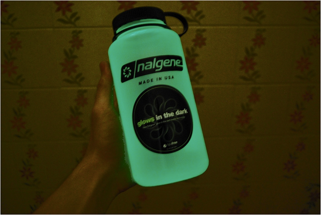
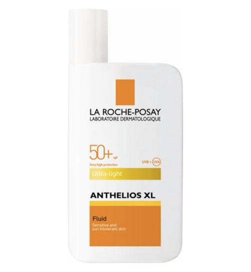
我们想要变得更好！如果你有新的想法，请和我们互动交流。微博：@爱因思坦酱微信：aiyinsitan_adventure邮件：ayst_adventure@163.com我们期待着你的声音！